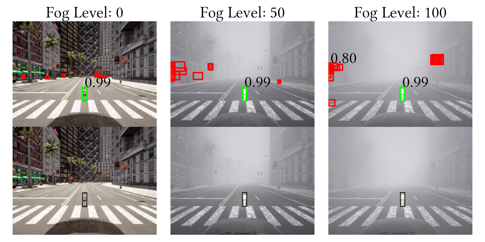
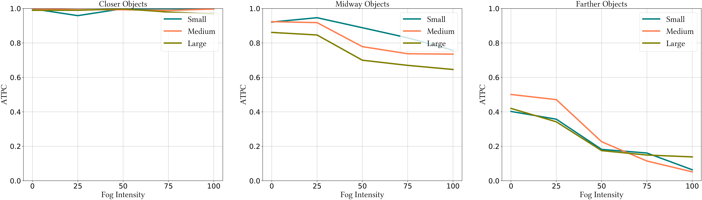
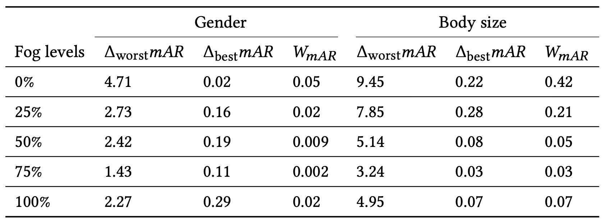

-->

Black in the bottom plots indicates ground truth bounding boxes (i.e., there is only one pedestrian). Green indicates true positives and red indicates false positives. The confidence score is shown only when it is > 0.5. With the high levels of fog, it is possible to get false positives with confidences as high as 0.8.

FACET sample image across processed darkness levels 0.1, 0.4, 0.7, and 1.0 with 1.0 reflecting original darkness level and 0.0 representing total darkness. The darkness achieved through image processing techniques are intended to mimic natural lighting conditions.

Carla simulation sample image across fog intensities of 0%, 25%, 50%, 75%, and 100%. The visibility of the road incrementally reduces as the fog intensity increases.

Performance disparities of ResNet50-backbone DETR model on Monk Skin Tone scale on FACET dataset. The metrics mAR and ATPC shows the model is more capable of identifying lighter skin tone people and more confidently than darker skin tone people. For any skin tone, the model's performance drops with the darkness.

Analysis on the annotated lighting conditions, "well-lit" and "dimly-lit", and the skin tone. While the disparity for skin tones in the dimly-lit is not significant, lighter skin tones stands a better way of getting identified in well-lit conditions.

The disparity analysis of the performance of the object detector for Carla experiments based on gender, skin tone and the body sizes are shown. Even though gender and skin tone do not affect much, small body size (children) is detected poorly. Each category of gender and body size plots use three types of pedestrains and the bold line represents the average line for each group. The skin tone plots use only one pedestrian type for each category due to the limited choices in the Carla catalogue of pedestrians.

The disparity analysis of the performance of the object detector for Carla experiments based on gender, skin tone and the body sizes are shown. Even though gender and skin tone do not affect much, small body size (children) is detected poorly. Each category of gender and body size plots use three types of pedestrains and the bold line represents the average line for each group. The skin tone plots use only one pedestrian type for each category due to the limited choices in the Carla catalogue of pedestrians.

The disparity analysis of the performance of the object detector for Carla experiments based on gender, skin tone and the body sizes are shown. Even though gender and skin tone do not affect much, small body size (children) is detected poorly. Each category of gender and body size plots use three types of pedestrains and the bold line represents the average line for each group. The skin tone plots use only one pedestrian type for each category due to the limited choices in the Carla catalogue of pedestrians.

ATPC metric values of Fig.~\ref{fig:3x4plot}b is divided into three plots based on the distance of the annotations to the ego vehicle. The ATPC metric decreases with both the distance and fog intensity.
